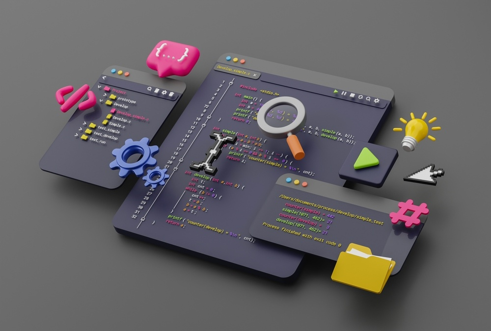

HTML e CSS
Mesmo se você for iniciante no meio da programação provavelmente já deve ter ouvido falar sobre HTML. O HTML é uma linguagem muito fácil de se aprender e em pouco tempo você já poderá criar um website com facilidade. Com um pouquinho mais de tempo e dedicação, você poderá estilizar suas páginas utilizando o CSS, conseguindo um resultado mais profissional.
O HTML e o CSS são utilizados para criar páginas web e atuam de forma complementar. Neste artigo você poderá conhecer mais sobre eles e como iniciar seus estudos, principalmente se você está dando os primeiros passos nessa área.

Qual linguagem devo aprender primeiro?
Quando iniciamos na área de TI, ficamos com muitas dúvidas sobre como entrar na área de programação, sobre qual é o primeiro passo etc. É comum esse tipo de dúvida pois temos hoje uma infinidade de opções, seja de desenvolvimento desktop, web e mobile.
Não existe uma linguagem que você tem que aprender primeiro, o que temos são bases que nos auxiliam. É que veremos a seguir, independente da linguagem que formos escolher depois.

Estruturas condicionais e de repetição
Ao iniciar os estudos em programação nos deparamos com as estruturas condicionais e de repetição, que são dois pilares em relação a lógica de programação.
Front-end e Back-end e Full Stack
Front End ou Back End developer são termos para diferenciar onde uma pessoa que programa acaba se especializando. Se você está entrando no mundo do Desenvolvimento, muito provavelmente classifica todo mundo como programador e programadora, mas os sistemas se tornaram tão complexos que precisamos que cada um seja responsável por partes específicas de uma aplicação.
Algumas linguagens de cada segmento
| Front-end | Back-end |
|---|---|
| HTML | Java |
| CSS | C# |
| JavaScript | PHP |